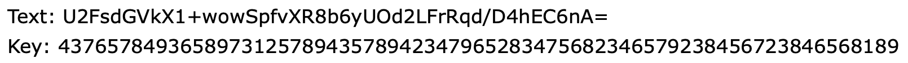

Editorials
Level 1
Question - In a certain language, ORANGUTAN is spelled as LIZMTFGZM, PARAPHERNALIA is spelled as KZIZKSVIMZORZ. Your task is to find out, how will we spell MVEVITLMMZTREVBLFFK in this god level language. Find the answer and move to the next level :)
Answer - NEVERGONNAGIVEYOUUP
Logic - You need to flip each and every letter of the given word. For example, change A to Z, B to Y, C to X and so on.
Level 2
Question - You are a crazy fan of MrBeast. You made a YouTube Channel in his name and reuploaded all his videos on your channel. Your channel grew exponentially to 500K subscribers. But one day MrBeast found about your channel and did something due to which your entire channel got deleted. What did he do? That's enough hint for this one, see you at the next level :)
Answer - SURREPTITIOUS
Logic - The answer to question would be Copyright but this is not the end. You need to click on "Copyright" word at the footer of the webpage to know the actual answer.
Level 3
Question - The answer to this level is ANTEDILUVIAN.
Answer - ANTEDILUVIAN
Logic - The form will not accept ANTEDILUVIAN as the answer. You need to replace the backlink of website to this answer and put the answer on the new page to solve the level.
Level 4
Question - So you finally made it to Level 4. First 3 Levels were easy, weren't they? Now its time for the real game. Here is your problem statement - Did you know that you can login into a Discord Account without Email or Password just by using the "User Token"? Well that's what you have to do now. A Discord User Token is hidden on this webpage. Find it, login into the account and the Username (e.g. Shashank#0301) is the answer for this Level. See you at the next one :)
Answer - Worcestershire#0218
Logic - The User Token is hidden as comments in the source code of the website. You need to find it and login into the account. See this for How to login into Discord using User Token
Level 5
Question - The answer to this level is an image. It is right in front of you. Find it and move to the next level :)
Answer - BELLIGERENCE
Logic - The image in shown as the favicon of the webpage. To scan it, you need to locate the place where that image is stored. It will be an QR Code. You need to scan it to find the answer.
Level 6
Question - You seem too tired just after 5 Levels. Nevermind, here is an easy one. The answer to this level is EMBEZZLEMENT. Go, answer it and move to the next level!
Answer - VNYVAAOVNVMG
Logic - If you see closely, the title of the webpage was "Level 1 | Clueminati". So you need to convert the answer using the same logic as of Level 1.
Level 7
Question - Oh No! Website server crashed. No clue can be displayed now! You just have the file below to find the answer. All the best! Let me repair the server before you reach the next level. Get File
Answer - PHILANTHROPIC
Logic - You need to download the file. The title of the file reads "esrom" which is reverse of the word "morse". So you need to reverse the audio file, decode the morse code to find the answer.
Level 8
Question - Video ID: nECTc2LZj8Q
Answer - IDIOSYNCRATIC
Logic - The question gives you a YouTube video ID. You need to find the video and see it for next clue. It will take you to a secret link on the Channel's About page which will further take you to a pastebin password protected file whose password is the answer of Level 7, i.e. PHILANTHROPIC. Opening it gives you the answer.
Level 9
Question - “Fee fi fo fum, watch out everyone, HERE I COME!” roared the giant. - An extract from one of the very famous stories of our childhood. Find out the name of the story. The answer is the 4th word of the name of story. Solve this quick because things will be deadly now :)
Answer - BEANSTALK
Logic - This extract is from the famous story "Jack and the Beanstalk" and hence the 4th word is the answer.
Level 10
Question - Rij n Dael are roomates. They are going to their hostel room. On their way, they come across a poster on a pole which had cipher text and a key. They opened up their laptops immediately and started decrypting it. Be like them.
Answer - TERGIVERSATE
Logic - Rijndael is an advanced encryption standard. You need to decode the Text using the key on any decoding website, preferably this.
Level 11
Question - Visit this website from a Tesla to find the Answer :)
Answer - PERTINACIOUS
Logic - No. You don't need to buy a Tesla to solve this level. To solve this, you need to simply change your Browser's User Agent to that of a Tesla. Read more here on How to Change User Agent of a Browser.